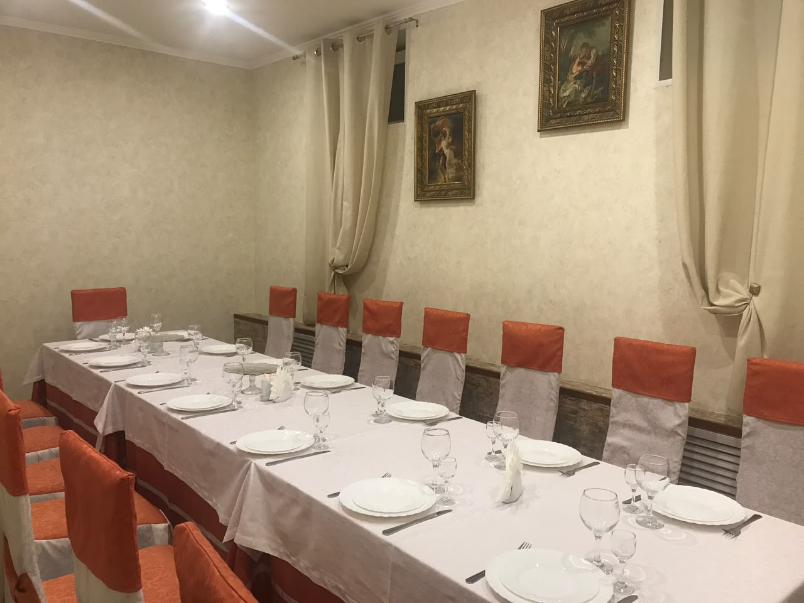
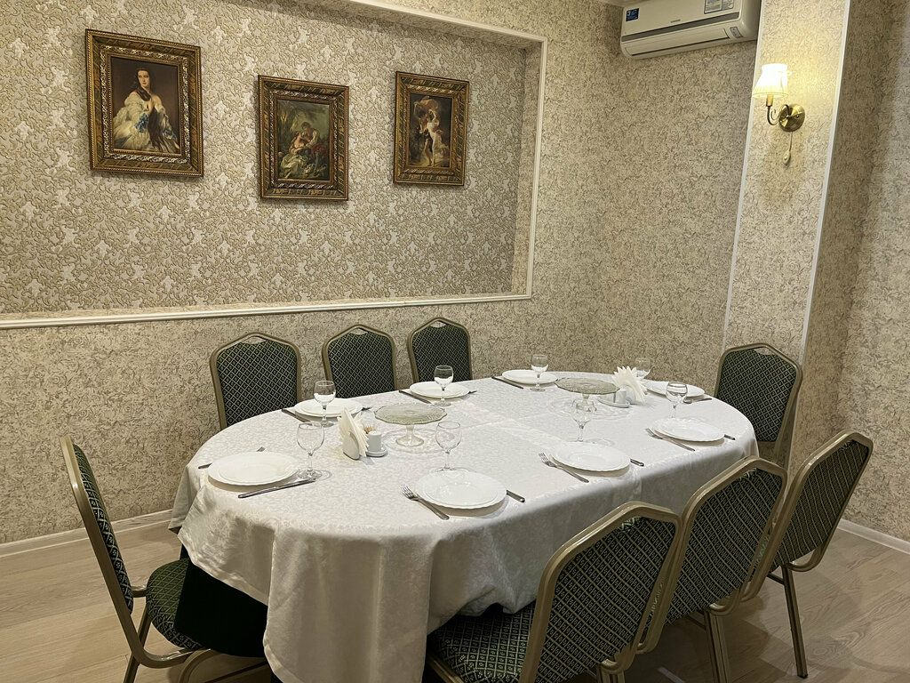
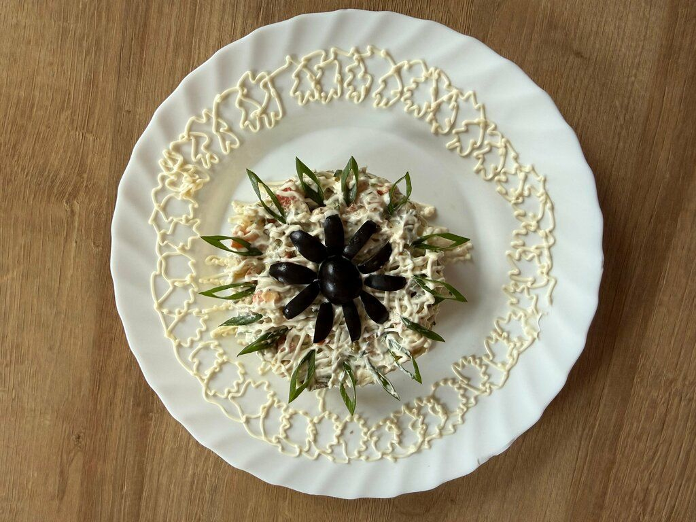
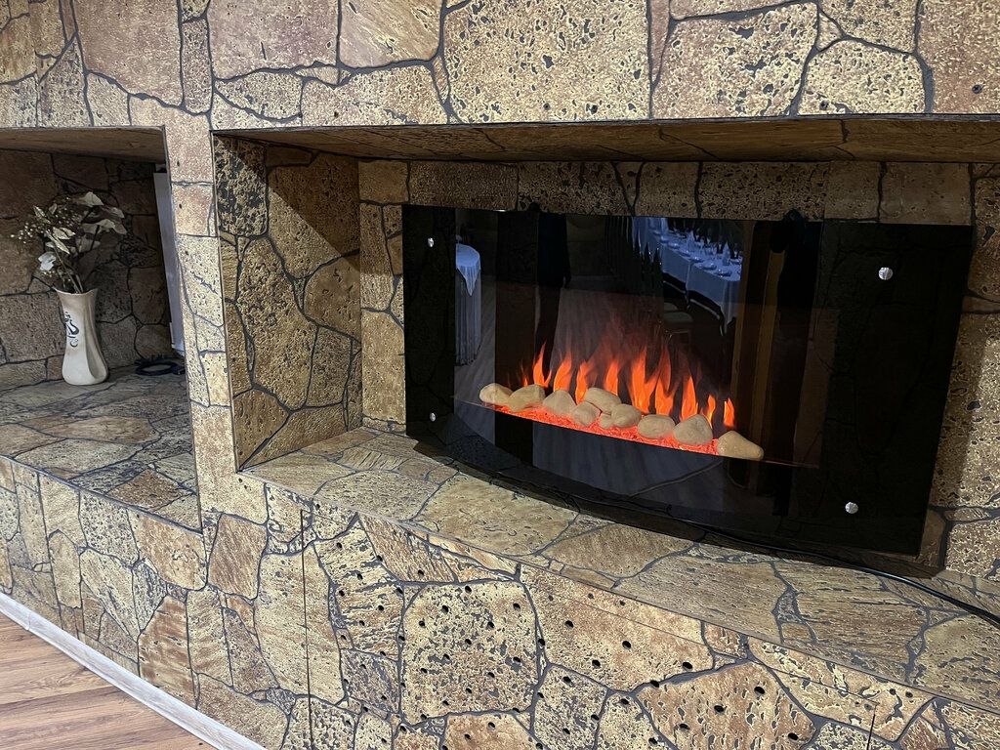

Большой белый зал
до 130 гостей
Большой светлый зал. Столы ставят длинными рядами или отдельно — по числу гостей.

Большой зал до 130 гостей и небольшие залы для самых близких. Посторонних за соседними столами не будет.
Поминальная трапеза — от 1 800 ₽ на человека. Позвоните или напишите в WhatsApp, и к вашему приходу стол будет накрыт.

Назовите дату, время и сколько будет гостей.
Шесть вариантов, от 1 800 до 4 000 ₽ на человека. Состав — в разделе «Меню».
Стол будет накрыт к вашему приходу. От крематория можно дойти пешком.
Каждой семье — отдельный зал. Администратор подберёт его по числу гостей.
до 130 гостей
Большой светлый зал. Столы ставят длинными рядами или отдельно — по числу гостей.


до 40 гостей
Для обеда в кругу родных и коллег. За соседними столами не будет чужих людей.

до 50 гостей
Для обеда в кругу семьи и близких.






Фото — ваши и с вашей карточки на Яндекс Картах.
Юбилеи, дни рождения и встречи семьи — в тех же залах. Напишите дату и число гостей, администратор пришлёт банкетное меню.
Если вашего вопроса здесь нет, задайте его администратору по телефону.
Обед часто заказывают меньше чем за сутки. Позвоните — администратор скажет, успеют ли накрыть к вашему времени.
Пару минут пешком, гости могут дойти без машины.
Во всех вариантах — кутья, домашние блины с мёдом, закуски, горячее на углях, компот и вода. Всего шесть трапез, от 1 800 до 4 000 ₽ на человека, обслуживание — 10 %. Состав — в разделе «Меню».
Уточните у администратора условия для вашей даты.
Вход и зал доступны на коляске, есть парковка для людей с инвалидностью.